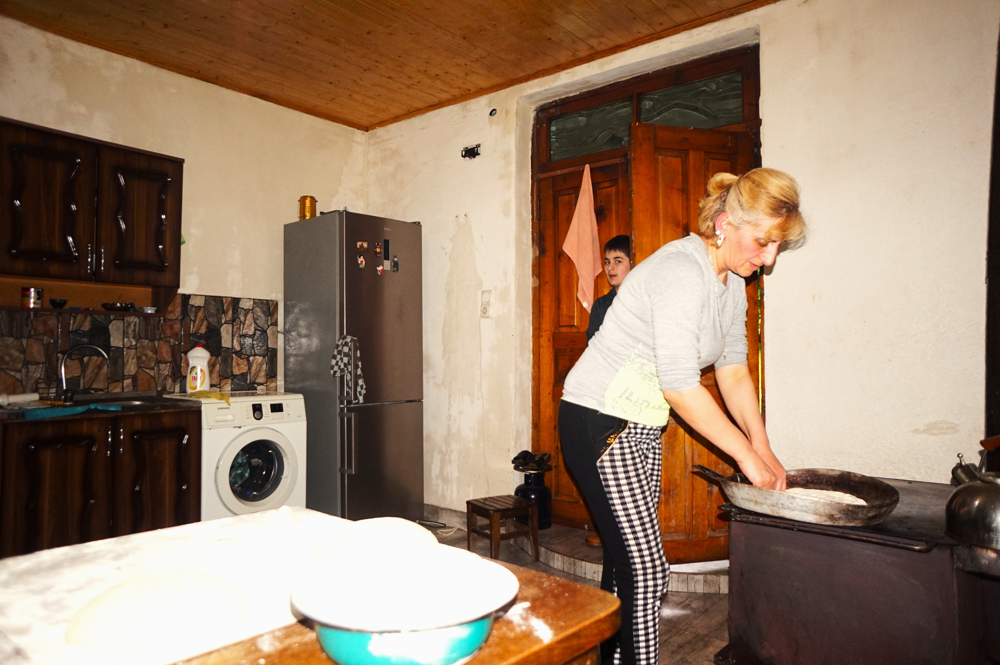

ეკას ისტორია

ნანის ისტორია

ეკა კუკულავას ინტერვიუს ჩასაწერად ლობიანების ცხობის დროს მივუსწარით და კინაღამ სათქმელი
დაგვავიწყდა, ისეთი სურნელი ტრიალებდა სახლში. ოჯახში მეუღლესთან და შვილებთან ერთად დაგხვდა. ყველანი ერთად
ფუსფუსებდნენ. ზოგი შეშას უკეთებდა, ზოგი კარაქს უსვამდა ლობიანებს, ზოგი აცხობდა და ზოგიც გვართობდა. ამ
ჟრიამულში ეკას რამდენიმე კითხვა დავუსვით საოჯახო ბიზნესზე.
მათი ოჯახი ოთახებს თხუთმეტ წელზე მეტია აქირავებს და არაერთი ადამიანისთვის უმასპინძლიათ შინ რაჭული
კერძებით. სწორედ აქედან დაებადათ იდეა, გაეხსნათ საცხობი და თავიანთი მოწეული პროდუქტებით შექმნილი კერძები
შეეთავაზებინათ მომხარებლებისათვის.
ეკა, მოგვიყევით, როგორ გახსენით თქვენი საცხობი?
-დაახლოებით 2016 წელს, იმისთვის, რომ დამატებითი შემოსავალი გვქონოდა მოვიფიქრეთ საცხობი გაგვეხსნა.
ყველაფერი სასაცილოდ დავიწყეთ, თანხებიც არ გვქონდა. სახლში რაც მოგვეპოვებოდა, ძველი ხის მასალა, მე და
ჩემმა მეუღლემ დავჭერით ,,დრუჟბით“. არც კი დავხერხეთ, შუა-შუა დავჭერით და დაჭდობილს რომ ეძახინ რაჭაში,
ისეთი ქოხი გავაკეთეთ. შიგნით დავდგით სვანური “ფეჩი”, ნიჟარა, პატარა მაგიდა და ასე უცებ, ერთ კვირაში
მოფიქრებული და გაკეთებული ქოხი გავხსენით. ფეშენებულური არაა, მაგრამ სუფთად, ლამაზად და კოხტადაა
მოწყობილი. გვინდოდა, ჩვენი შვილებისთვის დამატებითი შემოსავალი ყოფილიყო და გამოვიდა, გაამართლა ნამდვილად.
მართალია, სულ თვე-ნახევარი ვმუშაობთ, სეზონზე, ივლისის 10-15-იდან აგვისტოს ბოლომდე. ყველაზე კარგ
ვარიანტში ორი თვეც ვმუშაობთ, მაგრამ იდეამ გაამართლა და კმაყოფილი მომხმარებელიც ბევრი გვყავდა. არა მარტო
ჩვენი დამსვნებელი, სოფლის ყველა დამსვენებელი, “სანსეთ შოვის” დამსვენებელიც კი ჩვენთან ყიდულობდა და
არამარტო იმ პერიოდში, აქ რომ ისვენებდნენ, როცა თბილისში მიდიოდნენ, მაშინაც გვიკვეთავდნენ და თან
მიჰქონდათ ათი-თხუთმეტი ცალი. ამასობაში, მეორე პატარა შემეძინა და ორი წლით დავკეტეთ ეს საცხობი და წელს
ისევ ვაპირებთ ამუშავებას.
ეკა, თქვენ გაქვთ საოჯახო სასტუმრო კვებით გყავთ მცირეწლოვანი შვილები და, პარალელურად, ახერხებთ
საცხობის გახსნასაც .
დიახ, დიახ, სწორედ ასეა.
წინაღობები თუ შეგექმნიათ ამ დროის განმავლობაში?
-რა თქმა უნდა, შეგვექმნა. ძირითადად ფინანსური პრობლემების გამო გადავწყვიტეთ, გაგვეხსნა საცხობიც და
სწორედ მაგიტომ ავაშენეთ სახლში რაც გვქონდა, იმ მასალებისგან. ფინანსები რომ გვქონოდა, ძალიანაც გვინდოდა,
კაპიტალურად გაგვეკეთებინა. მერე რაღაცა ორი კაპიკი შევაგროვეთ და ახლა ბლოკი და სახურავი გვაქვს ნაყიდი,
მაგრამ თანხა მაინც დაგვაკლდა. გვჭირდება კარ-ფანჯარა, ცემენტით და სხვა მასალებით მოპირკეთება. მაგის
თანხები კი ჯერ არ გვაქვს. იმედია, წელს მოვაგროვებთ ამ თანხას და კაპიტალურად ავაშენებთ, თან მინდა, შიგნით
მაღაზიაც გავაკეთო, ისე, რომ ცალკე საცხობი და ცალკე მაღაზია იყოს და, რა თქმა უნდა, ეკოლოგიურად სუფთას
ვაკეთებთ - ჩვენი ყველით, ჩვენი რძით და ლობიანსაც მხოლოდ ადგილობრივი ლობიოთი ვაცხობთ. ლორიც ადგილობრივი
გვაქვს და თუ ლობიანს ლორით გვიკვეთავენ, ჩვენივე ლორით ვაკეთებთ.
რას ისურვებდით, რომ გაგეკეთებინათ თქვენთვის ბიზნესის განსავითარებლად?
რომ მქონდეს საშუალება, მეორე და მესამე სართულს გავარემონტებდი, მეტი სტუმრის მიღება რომ შევძლო. ორჯერ
დავწერე საგრანტო პროექტი და ვერ გავიმარჯვე. მე არ მითხოვია, ვინმემ ახალი გამიკეთეთ-მეთქი, სახლი
აშენებული მაქვს, მეორე სართულისთვის მჭირდება ხის მასალა, რომელიც მთლიანად მე რომ შევიძინო, ამის საშულება
არ მაქვს.

რამდენად ხართ ინფორმირებული პროექტების, საგრანტო კონკურსებისა და სხვა საშუალებების
შესახებ?
ინფორმაცია ნაკლებად ამოდის ჩვენამდე, შეიძლება რაიონში უფრო მეტად იცოდნენ და ჰქონდეთ ინფორმაცია, მაგრამ,
ყოველ შემთხვევაში, მე სამი პროექტი დავწერე. მათ შორის ერთერთში მეორე ეტაპზე გადავედით და მესამე ეტაპზე
მოგვივიდა უარი, რაც ძალიან დამთრგუნველია. განვითარების სურვილი დიდია, მაგრამ შესაძლებლობა - იმის
გათვალისწინებით, რომ კურორტთან ვართ და სეზონურად მხოლოდ ზაფხულშია დატვირთული - დაბალია. ვერც კი
გარისკავ, რომ სესხი გამოიტანო, ვაი და ცუდი ამინდი იყოს, ან რამე მოხდეს, ვეღარც გადავიხდი იმ სესხს. მე
რომ გადავწყვიტო და სესხად გამოვიტანო, 100 000 მაინც სჭირდება ჩემს სახლს. ამხელა რისკს ვერ გავწევ და
ფიზიკურადაც ვერ შევძლებ ამხელა თანხის გადახდას. ბავშვებს ისე ხომ ვერ დავტოვებ, ზამთრისთვისაც ხომ უნდა
მოვემზადოთ.
როგორც ვიცი, თქვენი ოჯახი სოკოს და ნაძვის კევს აგროვებთ.
დიახ, სოკოს ჩემი დედამთილი აგროვებს, კევს ვეღარ… აღარ შეუძლია, მაგრამ შარშან დაჩი, ჩემი ვაჟი, ჩაერთო
საოჯახო საქმეში და საკმაოდ ბევრი კევიც შეაგროვა.
ამ დროს დაჩიმ ჩაიხითხითა, მე ბიზნესმენი ვარო, გამოგვიცხადა, მცირე მეწარმეო. ინტერვიუ ცხელმა ლობიანებმა
შეგვაწყვეტინა და ცდუნებას ჩვენც ვეღარ გავუძელით. ინტერვიუ გაზაფხულზე ჩავწერეთ, მაშინ წარმოდგენაც არ
გვქონდა იმ მოსალოდნელი ტრაგედიის შესახებ, რომელიც შოვში დატრიალდა. მინდა აღვნიშნო, რომ ტრაგედიის მეორე
დღიდან ეკას ოჯახმა თავისი საცხობი შოვის მოხალისეებს ბანაკისთვის სრულიად უსასყიდლოდ დაუთმო, სახლის კარიც
ფართოდ გაუღო და გვერდიდან არ მოშორებულა ბოლო დღემდე. ეკა და მისი ოჯახი სახეა იმ კეთილი და მშრომელი
ხალხის, რომელიც სოფელ გლოლაში ცხოვრობენ და ცდილობენ, თავიანთი და ამ ქვეყნის მომავალი უფრო ნათელი
გახადონ.
-ნანი ბერიშვილი სოფელში გამორჩეულად პატივსაცემი და განსაკუთრებული ისტორიის ადამიანია. ჩვენ გუნდს
თავის
პატარა და ძალიან მყუდრო სასტუმროში უმასპინძლა და ისეთი ზღაპრული ამბები გაგვანდო დიდხანს ემოციების
გავლენის ქვეშ ვიყავით და გვინდოდა ეს ამბები არ დასრუბულიყო. ქ.ნ ნანი მართლაც განსაკუთრებული
სიყვარულით
გვიყვებოდა სოფელზე, ხალხზე, ის არ იყო მოქცეული ერთი კონკრეტულ სოციუმსა და სივრცეში მისი აზრები და
განცდები ფართო ჭრილში, სამყაროში ადამიანისა და ბუნების ურთიერთკავშირისკენაა მიმართული. თითოეულ მის
ქმედებასა და დამოკიდებულებას დედამიწასთან მიმართებაში გრძელვადიანი პერსპექტივით განიხილავს, რითაც
საკუთარი პასუხისმგებლობებითა და პატარა ნაბიჯებით, დიდ სარგებლს სძენს საზოგადოებას, ქვეყანას,
შესაბამისად, დედამიწასაც. ისე, როგორც არავინ ქ.ნ ნანიც იმ ადამიანთა კატეგორიას ეკუთვნის, ვინც
განსაკუთრებულ მისიებს ისე ასრულებენ, რომ ამის შესახებ არც კი იციან.
- ეს სოფელი ბერმა შექმნა და ჩემი გვარი, ბერიშვილი, სწორედ აქედან მოდის. ახლა კიბეზე რომ ამოვდიოდით, ამ
მთებს გავხედე და გულში ვთქვი: ღმერთო, ეს ბავშვები რომ ამ მთებს შეხედავენ, ხომ ნამდვილად საოცრებები
გაიზრდებიან!
ეს სოფელი სტრატეგიული მნიშვნელობისაა, 25 კილომეტრში საზღვარია, მიღმა კი - ნამდვილი ოსეთი.
ვიცოდი და ხშირად ვისმენდი ისტორიებს ამ სოფელზე, ამიტომ ყოველ წელს ჩამოვდიოდი, ერთი წელიც კი არ
გამიცდენია. ინვალიდი დედა მყავდა, რომელსაც არაფერი შეეძლო. კოვზის აღებასაც კი ვერ ახერხებდა
დამოუკიდებლად. მე და ჩემი და ვუვლიდით 12 წელი, ხელში აყვანილი დაგვყავდა, ჩავსამდით ავტობუსში და მაინც არ
ვაცდენდით გლოლაში ჩამოსვლის არცერთ წელს. 2012 წელს დედაჩემიც გარდაიცვალა.
2013 წელს პირველი ნაბიჯი გადავდგი, როდესაც პირველი სტუმარი მივიღე.
ვიღაცებს ეზო მოეწონათ, შემოვიდნენ და იკითხეს, ხომ არ აქირავებთ ბინასო. ჩემს თავს ვკითხე, რატომაც არა?
ორი კაპიკიც მადლია-მეთქი და აი, ასე,შვილო.
-იქამდე თბილისში ცხოვრობდით, როგორ გადაწყვიტეთ გლოლაში გადმოსახლება?
-სრულიად გადმოვბარგდი, როცა შევხედე, რომ აქ უკვე პატარა ბიზნესი დამეწყო, მაგრამ რაც არ უნდა უცნაურადაც
ჟღერდეს ჩემი ასეთი ნათქვამი ერთერთი ყველაზე მთავარი მიზეზი ჩემი ძაღლი მოლი იყო. იცით, მე და ჩემს დას
ძალიან გვიყვარს ცხოველები. ახლახანს ქუთაისში ვიყავი და ორი კილო პომიდორი ჩემთვის ვიყიდე და ასი ლარის
საჭმელი ძაღლს, მოლის ვუყიდე, არ გიგიკვირდეთ.
ჩვენ ეზოში სადაც ადრე ვცხოვრობდი სასტიკად აწამებდნენ და აწვალებნენ მოლის, ის კი ჩემს დას მიეკედლა, მე
სოფელში ვიყავი ხოლმე პერიოდულად და როცა ჩემს დას ტელეფონზე ვესაუბრებოდი ის მოლის ცოდვით ტიროდა, რომ
ვერაფერი გავაწყე ვუთხარი, მოლი სოფელში გამოეგზავნა ჩემთვის და დიდი წვალებით ჩვენმა ნაცნობმა ჩამომიყვანა.
ზამთარში ვერ მივატოვებდი და ვერც ვერავინ ვნახე, რომ მოევლო. თუ წავიდოდი ავტომატურად გამოვიდოდა, რომ
მგლების შესაჭმელად ვტოვებდი და ცხადია დავრჩი, 4 წელია საკუთარი დაც კი არ მინახავს, რადგან მას სოფლამდე
ჩამოსვლა არ შეუძლია, მე კიდევ მოლის ვერ მივატოვებ. ძაღლებმა საოცარი სიყვარული იციან.
- მე პატარა გოგო აღარ ვარ. პირველ მაისს 73 წლის გავხდი. ყოველთვის საოცრად შრომისმოყვარე ვიყავი,
ბავშვობაშიც კი, სადაც კი გვიცხოვრია ოდესმე, ყველგან სიკეთე, სიყვარული, წესრიგი და სისუფთავე მიგვქონდა,
ყველგან მეზობლები გაოცებულები იყვნენ, ეს პატარა ბავშვები ასეთები როგორ არიანო. ყველაფარი ეს შინაგანად
მოდიოდა, ახლა კი ადამიანებში ამ მოთხოვნილებას ვეღარ ვხედავ.
ჩემს ნათესავებსაც კი ეშინიათ ჩემი, რადგან იციან, რომ ჩემს ეზოში ნამწვსაც ვერ დააგდებენ და უცებ თუ
გადააგდებენ ღობის იქით, ამაზე სულ ვუბრაზდები: " რა მნიშნელობა აქვს, ეგ მიწა არაა?! ადამიანები ვერ
ხვდებიან, რომ მარტო ჩემი ეზო კი არა, ყველა ადგილი მათია და მოსაფრთხილებელია.
მე და ჩემი ოჯახი ჩვენს მამაპაპისეულ მიწაზე 70-იან წლებში დავბრუნდით, 70-იან წლებში აქ არავინ ცხოვრობდა
და ისტორიულად ეს ადგილები ჩემს გვარს ეკუთვნოდა. ერთი ასანთის ღერი არ გადამიგდია, იმ პერიოდში სად იყო
ასეთი აქცენტი ბუნების მოვლაზე?! ამის გამო დამცინოდნენ კიდეც, ახლა კი ხედავთ, როგორი მოწოდებებია: "ნუ
დააბინძურებთ ბუნებას“.
ასეთი წელიწადი არ ყოფილა. წარმოიდგინეთ, არც ვაშლს ასხია, არც - მსხალს. მხოლოდ ყურძენს, იმიტომ რომ სეტყვა
იყო და ჯერ არ ჰქონდა კვირტი, ყველაფერს დააყრევინა ნაყოფი. კაკალს ფოთოლი სცვივა უკვე და ეს არის გლობალური
დათბობა, თქვენ ხომ უნდა იცხოვროთ. მე კი ვიტყვი, რომ გავლიე ჩემი ცხოვრება, მაგრამ თქვენ, თქვენმა
შვილიშვილებმა სად უნდა იცხოვრონ დაქცეულ დედამიწაზე?! რატომ?! შვილის და შვილიშვილის სიყვარული ის კი არაა,
ჯიბეში რა ჩავიტენე და სახლში რა მივიტანე, არამედ - ამ ჩვენ საერთო სახლს, ღმერთის შექმნილ ამ სილამაზეს
როგორ გავუფრთხილდებით. ჩვენ უკვე ხელოვნური და სინთეტიკური გვაცვია, საჭმელი ხელოვნურია, ბუნება კი
შევჭამეთ, მარტო ჩვენ, ქართელებმა კი არა - მთელმა მსოფლიომ. მსოფლიო კიდევ ერთ დონეზე დგას.
-აქ საბოლოოდ როცა დაბრუნდით და მარტო, ქალმა დაიწყეთ ოთახების გაქირავება, ბიზნესის კუთხით რა
სირთულეების გადალახვა მოგიწიათ?
- ნამდვილად მომიწია, ჩემი ადგილისთვის მებრძოლა, მაგრამ ამ სოფელში ერთმანეთის გატანა იციან. ოცდაათ წელზე
მეტია ამ სოფელში ვარ, არ მახსოვს, ვინმეს რაიმე შეურაცხყოფა ეკადრებინოს, მიუხედავად იმისა, რომ მარტო ქალი
ვარ. ის კი არა, ღია კარში მძინავს, რადგან ღამით ჩემი კატები ეზოში დადიან.
შეიძლება ზოგიერთს შურდეს ჩემი, მაგრამ სპეციალურად ჩემთვის წინაღობები არავის შეუქმნია. წინაღობები
მექმნებოდა ინფრასტრუქტურის განვითარებისას. მე მამაჩემის დანატოვარი განვავითარე. ეს სახლი ჩემი დისა და
ჩემი აშენებულია მამასთან ერთად, თუმცა უამრავი რამ შევცვალე. ძველებური აბანო და საპირფარეშოც კი
თანამედროვეთი ჩავანაცვლე. პირველად რომ გავხსენი, როგორც საოჯახო სასტუმროს მიმართ დიდად პრეტენზია
არაფერზე ჰქონიათ მომხმარებლებს, მაგრამ ზრდასთან ერთად წამოვიდა სხვადასხვა მოთხოვნა და, შესაბამისად,
ავუწყე ფეხი. ამ ყველაფერს კი რაღაც საოცარი ძალით ვაკეთებდი, რადგან კაციშვილი დამხმარე არ მყოლია. ჩხირსაც
კი არავინ გადამიწევდა და ახლაც, ჭიქა წყალს არავინ მომაწვიდის, შემომჩერებიან ხელებში რას გავცემ?! რას
მივცემ მე, მარტო ქალი.
გაფუჭდნენ ადამიანები, მაგრამ ჩვენი სოფლის პატარა ბიჭები თავზე მყვებიან. ნელ-ნელა შრომით მივდიოდი წინ,
წლიდან წლამდე ხელმომჭირნეობით ნაგროვები ფულით. ახლა სახლის წინ გადმოვხურეთ, რადგან თოვლი იყრებოდა კარში
და ზამთარში გარეთ ვერ გამოვდიოდი, მოვაწყე ჰოლი შეხვედრებისთვის, ჩემი ოთახი და სველი წერტილები, კაპიკების
გროვებით შევქმენი ყველაფერი მარტომ, რადგან არავინ, ერთი ადამიანიც კი არ მყოლია დამხმარე. დედამიწაზე
მხოლოდ ორი და ვართ.
-ყურძნის ხეივანზე მოგვიყევით
- 1978 წელს, მამაჩემმა ადესის ჯიშის ვაზის ნერგები სოფელი ხელთუბნიდან ჩამოატანინა და დავრგეთ. რას არ
ვუკეთებდით, ვფუთავდით ზამთარში, ვეფერებოდით და ხეივანი სულ გვქონდა, მაგრამ პირველი ხეივანი თოვლმა
წამიქცია და მიწასთან გაასწორა. 2019 წელს ახალი ხეივანი გავმართე. ზოგჯერ მეც მიკვირს და ვკითხულობ, მართლა
მე შევძელი ამდენი?
ჩვენამდე სოფელში მევენახეობა და ყურძენი საერთოდ არ არსებობდა იმიტომ, რომ ღები, გლოლა და ჭიორა ზემო რაჭის
უმაღლესი წერტილებია. მურმან ლებანიძეს აქვს ასეთი ლექსი: „უყურძნო მთის რაჭა მესამე რაჭაა“ ამ მესამე
რაჭიდან ერთერთი სწორედ სოფელი გლოლაა და ისტორიულად დედაჩემმა და მამაჩემმა იცოდნენ თქმა, რომ ვაშლი და
მსხალი აქ არ მოდიოდა, ამბროლაურიდან ამოჰქონდათ და კარტოფილში ცვლიდნენ. დასდევნენ თურმე ბავშვები ურმით
ამომსვლელებს თითო ქლიავზე და ვაშლზე, რადგან არ ხარობდა აქ არაფერი და ყურძენზე ხომ ლაპარაკი არაა, მაგრამ
გლობალურმა დათბობამ მოიტანა ის, რომ 40 წელია ჩემს ეზოში ყურძენი ხარობს, ვაზია და ვაწარმოებთ ღვინოს და
ცოტა არაყსაც ვხდი.
ამ კუთხისთვის ასე მაღალმთიან რეგიონში საოცრებაა, რომ ყურძენი, ღვინო და არაყი გვაქვს.
-ამ თქვენ მოწეულ ნობათს ვის სთავაზობთ?
ტურისტსაც და სოფელსაც. სოფელში იაფად ვყიდი, რადგან მაღალ ფასს ვერ შევკადრებ იმიტომ, რომ ყველა ახლობელია
და ხშირად საერთოდ ვჩუქნი. სულ ორას ოც ლიტრამდე ღვინოს ვწურავ, მაგრამ მაინც ვასაჩუქრებ. უცხოელ ტურისტებზე
შედარებით მაღალ ფასად ვყიდი და რუს ტურისტებზე კიდევ უფრო ძვირად.
მარტო ფულზე ვერ ვიქნები ორიენტირებული, მინდა ადამიანმა ისიამოვნოს, გაიხაროს, ბედნიერი წავიდეს და პატარა
რაღაცით პატივი ვცე.
ერთხელ ერთი სტუმარი მყავდა ჩილედან მე ინგლისური არ ვიცი და ჟესტიკულაციით მანიშნა, ჭამა სად შეიძლებაო.
ქართულად ვუპასუხე და ხელით ვანიშნე, წამოდი-მეთქი., გავუშალე სუფრა, ახალი მაჭარი მქონდა და დავპატიჟე.
გაგიჟდა სიხარულით, ამოიღო და ფულს მაწვდიდა, მე სასწრაფოდ ვიუარე და ინგლისურად „NO NO“ პასუხი დავუწყე.
ვუთხარი, არ მინდა-მეთქი და გუმანით მივხვდი, რაც მითხრა. როგორც დედაო, როცა MAMA თქვა. გადაიღო ჩემთან
ერთად სურათი და წაიღო ჩილეში. ხო ბედნიერი წავიდა არა?! მსოფლიოს ერთი წერტილიდან მეორე წერტილში ჩამოვიდა
და ადამიანური რაღაც იგრძნო, აი ეს არის მთავარი და არა ფული. ყველა გაიძახის ფული, ფული, ფული! სიხარბე თუ
მოგვიცავს, ჩვენც დაღუპული ვართ და საზოგადოებაც.
-ბევრი საგრანტო პროექტია და ახსნეთ, რომ თქვენც ისარგებლეთ ამ შესაძლებლობით. შეგიძლიათ
მოგვიყვეთ?
დიახ, კარიტასის გრანტი მოვიგე, ამბროლაურიდან იყვნენ შესამოწმებლად ამოსული და გაოცდნენ, როგორ შეძლო მარტო
ქალმა ამდენი რამის გაკეთებაო. ამ თანხით სასტუმროსთვის საწოლები და სხვა ავეჯი შევიძინე.
-ვიცით, ომ ტრანსპორტირების პრობლემა მწვავედ დგას რეგიონში?!
ავტობუსი კვირაში ერთხელ დადის, თუ ისე მოხდა, რომ წახვედი და ავტობუსს ვეღარ ელოდები, ტაქსი 40 ლარი ღირს.
ასეთი თანხების გადახდა, თუნდაც მცირე ბიზნესი გქონდეს, რთულია.
-სამედიცინო პუნქტი თუ გაქვთ?
სამედიცინო პუნქტი არის ჩვენი სოფლის ექთანი, ზემო რაჭის რამდენიმე სოფელს ერთი ექიმი ჰყავს და იმ ერთმა
ექიმმა მანქანის გარეშე როგორ უნდა მოაკითხოს ან მე ან სხვას, მხოლოდ სასწრაფო ამოდის, უნდა ითქვას, რომ რაც
გზა გაკეთდა, უკვე ძალიან მალე მოდიან, დაახლოებით ნახევარი საათი სჭირდებათ უკვე.
-ბოლო კითხვას დაგისვამთ. რას ისურვებდით ამ სოფლისთვის?
ღმერთმა ეს ბუნება ძალიან ლამაზი შექმნა, გაიხედებით გარშემო და ამაში თავად დარწმუნდებით, მაგრამ
ინფრასტრუქტურა არ გვაქვს, გზები გაკეთდა, მაგრამ გზის იქით კიდევ ხომ გჭირდება სხვა რამეც - გაზი, წყალი,
კანალიზაცია, მაღაზია თუ სხვა - ყველაფერი გვჭირდება და არაფერი გვაქვს. ვინატრებდი და ამას ხშირად ვამბობ,
ღმერთო, ისე არ წამიყვანო ამ ქვეყნიდან, ჩემი სოფელი მოწესრიგებული არ ვნახო-მეთქი.. რომ გახედავ მინდორს
მიხვდები, რომ ქვაც კი არ გდია ზედმეტად და მას არ ამახინჯებს არაფერი, მაგრამ ასე ჯერ არავინ ზრუნავს
ჩვენზე. ვინატრებდი მოწესრიგებულ ინფრასტრუქტურას ამ სოფლისთვის.

ინტერვიუს მიღმა საუბარი ქალბატონ ნანისთან კიბეზე და ჭიშკრამდე გაგრძელდა. მორცხვად, მაგრამ სიამაყით
გვიყვებოდა, თავისი პატარა სასტუმროზე, რომელშიც დილიდან საღამომდე დაფუსფუსებს, დაჰფოფინებს თავის
ყურძენსა და ყვავილებს, ეფერება ცხოველებს და გამვლელსა და გამომვლელს მომღიმარი სახით ეგებება და
იპატიჟებს შინ. ბუნებასა და ადამიანებზე შეყვარებული ქალბატონი ნანი რაჭის მთებზე და იმ სიყვარულზე
გვიყვებოდა, რომელიც მიუხედავად ბევრი გასაჭირისა, სოფელ გლოლაში აქვთ ადამიანებს, მან წარუშლელი
შთაბეჭდილება დატოვა თითოეულ ჩვენგანზე და ჩვენც იმედით სავსეებმა დავტოვეთ ის.
მარი ბარდაველიძეს სოფელში ყველა იცნობს და ყველას უყვარს. გარდა იმისა, რომ მასწავლებელია, ასევე ფლობს
მაღაზიას, არის ახლა უკვე ოთხი შვილის დედა და ჩვენს ტრენინგებს ცხრა თვის ორსული ესწრებოდა. პარალელურად,
ახალი სასწავლო წლისთვის და ბავშვისთვის ემზადებოდა. ინტერვიუს ჩასაწერად მაღაზიაში ვესტუმრეთ, სადაც
ინტერვიუს პარალელურად ხალხის ნაკადი არ წყდებოდა, ხოლო საქმეში თავისი უფროსი შვილი ეხმარება. მარის
რამდენიმე კითხვა დავუსვით, არ გვინდოდა შეგვეწუხებინა.
თქვენი ამბავი მოგვიყევით, როგორ აღმოჩდით სოფელში?
2009 წელს პროექტში "ასწავლე საქართველოსთვის" მივიღე მონაწილეობა. მაშინ ჯერ კიდევ ბათუმში ვსწავლობდი და
სტუდენტი ვიყავი, განაცხადი ისე შევიტანე, იმედიც არ მქონდა, რომ დამირეკავდნენ. პროექტი მაღალმთიან
სოფლებში, სადაც მასწავლებლები არ ჰყავდათ, წასვლასა და სწავლებას ითვალისწინებდა.
საგამოცდო ეტაპები მარტივად გადავლახე, შემდეგ გასაუბრება და ასე ორ კვირაში მომივიდა დადებითი პასუხი.
გავიარე სწავლებები და მიუხედავად იმისა, რომ აჭარის რეგიონი ავირჩიე და იქ მინდოდა დარჩენა, ზემო რაჭაში
წასვლა შემომთავაზეს მხოლოდ იმ პირობით, რომ მარტოს არ გამიშვებდნენ და თან ჩემს კოლეგა ლელასაც
გამოუშვებდნენ, რომელიც სწავლებების დროს გავიცანი.
და აი, ასე ერთ დღესაც დაბარგულები ქუთაისის ,, მარშუტკით“ წამოვედით, აქეთკენ მომავლებს გზაში მძღოლი
გვეუბნებოდა, იცით, საზღვარზე რომ მიდიხართო? უწერამდე გზა მშვენიერი იყო და ჩვენც გვიხაროდა. მაშინ არც გზა
იყო, არც - არაფერი. უწერას რომ გამოვცდით, ტყე დაიწყო და აღარასდროს დამთავრდა, მაშინ კი დაფვიქრდი, სად
მოვდიოდი?
სოფელში პარასკევს ამოვედით, ნაქირავებ ბინაში. მეორე დღესვე დავათვალიერეთ სოფელი . გულისწყვეტით
ვუყურებდით ამდენ დაკეტილ და მიტოვებულ სახლს. სამსახურში თბილი კოლექტივი დაგვხვდა, ბავშვებსაც გაუხარდათ
ახალგაზრდა მასწავლებლები. იმ დროს აბიტურიენტ მოსწავლეებთან ასაკის სამ-ოთხ წლიანი სხვაობა მქონდა სულ.
თავიდან ყველაფერი საკმაოდ მარტივი და ლამაზ ფერებში იყო. გვეგონა, მაღაზიები და სავსე სოფელი დაგვხვდებოდა,
მაგრამ აღმოჩნდა, რომ მთელი თვის მარაგი ერთად უნდა შეგეძინა. მაშინ ავტობუსი ორ კვირაში, ზოგჯერ კი თვეში
ერთხელ ამოდიოდა. როგორც კი ხელფასი ჩაგვერიცხა, მე და ლელა გავიქეცით და ყველაფერი ერთად ვიყიდეთ. როგორც
გითხარით, მოსწავლეებთან დიდი ასაკობრივი განსხვავება არ გვქონდა და ერთადაც ხშირად ვერთობოდით,
ვსეირნობდით, ვლაპარაკობდით, ზამთარში დომბურით ვსრიალებდით, ლაშქრობებში დავდიოდით და თავის გასართობს
ვიგონებდით. ამასობაში, ჩვენი მომავალი მეუღლეები გავიცანით, დაიწყო დიდი სიყვარულის ისტორია და აგერ კი
გვყვას სამი შვილი და მეოთხეს ველოდებით.
მაღაზიის გახსნის გადაწყვეტილებმადე როგორ მიხვედით?
ეს პროექტი გაეროს ქალთა ორგანიზაციისა და ნორვეგიის საელჩოს მხარდაჭერით არის შექმნილი. ისინი აფინანსებენ
ფონდ ტასოს, რომელიც ემსახურება და ძირითადი ორიენტირი აქვთ სოფლებში ქალთა გაძლიერებაზე. ამ პროექტის
ფარგლებში შევიტანე განაცხადი გრანტის შესახებ მაღაზიის გახსნასთან დაკავშირებით, რადგან არსებობდა რეალური
საჭიროება. ახლა უკვე ბევრს ჰყავს მანქანა და გზაც გაკეთდა, მაგრამ ეს ყველაფერი ათიოდე წლის წინ სრულიად
წარმოუდგენელი იყო. წარმოიდგინეთ, სტუმარი რომ მოგვსლოდა უცებ და არაფერი გქონოდა, ვერც კი
გაუმასპინძლდებოდი. სტუმარიც რომ იქით იყოს, ელემენტარულ საჭიროების ნივთებსაც ძნელად იშოვნიდი,
განსაკუთრებით კი ზამთარში, როცა ზოგჯერ ერთი თვეც კი იკეტებოდა გზები და მოწყვეტილი იყავი ცენტრიდან. რაც
შეეხება პროექტს, მაშინ პროექტის ფარგლებში 2800 ლარით დამაფინანსეს, რამაც მაღაზიის აშენების ნახევარი
დაფარა. მართალია, მაშინ ბევრი რამ ვერ გავთვალე, მაგრამ საწყის ეტაპზე ეს თანხაც ძალიან დიდი დახმარება
იყო. იმ თანხით ორი მაცივარი და მასალა შევიძინე, დანარჩენი კი ჩემი ხარჯებით გავაკეთე.
პირველ წლიდანვე მაღაზიამ ძალიან კარგად იმუშავა, მოთხოვნაც გაიზარდა და, შესაბამისად, გაფართოება
გადავწყვიტე. მაღაზია ყველას სჭირდება. შარშან მუსიკალური ფესტივალი ჩატარდა შოვში და მოთხოვნამ ყველა
მოლოდინს გადააჭარბა, ლამის ოცდაოთხ საათიან მუშაობაზე გადავედით.

რამდენად აღმოჩნდა სოფელი ასეთი ფესტივალის მოთხოვნებისთვის მზად?
-არც სოფელი და არც რაიონი არ აღმოჩნდა მზად ასეთი დიდი მოთხოვნისათვის. ონშიც გაუჭირდათ გამკლავება -
საკვებისა და პურის შოვნაც კი ჭირდა. ზოგს სახლიდან საკუთარი ოჯახისთვის განკუთვნილი პურიც კი გამოვუტანე.
ჩემი აზრით ასეთ მოუმზადებობლობას რამდენიმე მიზეზი აქვს, მათ შორის ის, რომ, როცა საგრანტო კონკურსები
ცხადდება და განაცხადები შედის, ზოგ შემთხვევაში ,,ჩაწყობით“ ხდება დაფინანსება, შესაბამისად, უბრალო
ადამიანები პროექტს მიღმა რჩებიან. ვფიქრობ, დაფინანსება უნდა მიიღონ მათ, ვისაც სურს მცირე ბიზნესის გახსნა
- საცხობის, თონის და ისეთი სერვისების, რაც არაა და რისი საჭიროებაცაა სოფლებში. მეც თავად არაერთხელ
შემიტანია განაცხადი პროექტებში და თითით ჩამოსათვლელია ისეთი ორგანიზაციები, რომელშიც ჩაწყობა არ ხდება.
და თუნდაც, როცა პროექტის ფარგლებში მომთხოვ ბიზნესში 50/50 ფინანსების ჩადებას და მე გლეხი ვარ, იმ 50
პროცენტს მე საიდან მოგიტან?! ისეთი პირობები უნდა იყოს, რომელიც უფრო მოერგება გლეხს, მაგალითად, უფრო
დაბალი პროცენტი - 10-20 % . თუ მაკეთებინებ, გამაკეთებინე და ხელი შემიწყე, თუ არადა, მაგხელა თანხა რომ
მქონდეს და შემეძლოს გაკეთება, გრანტზე და დახმარებაზე რატომღა მოგაკითხავდი.
საგრანტო კონკურსებს კიდევ ერთი მხარე აქვს. ისინი ითხოვენ ინოცავიას და დაჩემებით იმეორებენ ამას.
მაგალითად, დავწერე და შევიტანე პროექტი. ახლა შეფასებაში მეუბნებიან, კი ბატონო, გიწერია ინოცავია, მაგრამ
დამატებით კიდევ მომსახურებები არ გიწერიაო. კი, მაგრამ თუ რამით არ დავიწყე, დამატებით სერვისს როგორ
გავცემ? აცხადენ, რომ პირველადი იდეები არ ფინანსდება შემდგომში განვითარებისთვისო. ახლაც საოჯახო
სასტუმროზე დავწერე საპროექტო განაცხადი, მანდაც მითხრეს დამატებითი სერვისებიო.
მე როგორ შევთავაზო ვინმეს ველოტურები ან ცხენოსნობა, როცა სასტუმრო არ მაქვს? როცა მექნება სასტუმრო და
დავინახავ, რომ მუშაობს, შემოსავლიანია, სტუმარი მთხოვს ტურს, გიდს და ჩნდება ასეთი მომსახურების საჭიროება,
კი ბატონო. ეს სერვისები მერე ჩემთვის უფრო მომგებიანი არ იქნება, ვიდრე მათთვის? ყველაფრის ერთად მოთხოვნა
არ არის სწორი.
არსებული მდგომარეობის გათვალისწინებით რომ შევდეხოთ, მე, როგორც მაღაზიის მეპატრონეს, პური ხშირად
სახლიდანაც გამომაქვს, მაგრამ, როცა სეზონი არაა, ოც, მაქსიმუმ ოცდაათ პურზე მეტი არ გაიყიდება, ოცდაათი
პურის გამო ვინ გახსნის თონეს. პური ლარ-ნახევარი ღირს, ერთი ოცი თეთრიც მოგება უნდა დაამატო, ანუ მოგება
დამრჩება 6 ლარი და საწვავი კიდე პურზე ორჯერ ძვირი ღირს. დისტრიბუცია აქ არ ამოდის და თუ ამოდის, უფრო
ძვირად ყიდის.
სხვა რაიმე პრობლემებს და წინაღობებს აწყდებით?
-ერთ-ერთი მთავარი პრობლემა ინტერნეტია. როგორც კი ამინდი აირევა, ინტერნეტიც ითიშება. დაგვპირდენენ,
ინტერნეტის კაბელებს გამოვიყვანთ თვის ბოლოსო და არც არავინ გამოჩენილა ჯერ.
დაგვპირდნენ, შოვის განვითარების ფარგლებში გაზს გამოვიყვანთო და არც შოვს დაადგა საშველი და არც - გაზს.
პროექტები თუ ცხადდება, ძალიან იშვიათია, ამ პროექტში უბრალო ადამიანმა გადახალოს ეს ეტაპები და მოიპოვოს
რაიმე დაფინანსება. ევროპული ფონდებსაც გამოუცხადებიათ გრანტები, მაგრამ მერიის თანამშრომლებსა და
ახლობლებში გადანაწილდა მშვენივრად. ცხადია, ეს ყველაფერი დემოტივაციას და უიმედობას იწვევს. ახლახანს
ერთ-ერთი დიდი ორგანიზაციის საგრანტო კონკურსში მივიღე მონაწილეობა და განაცხადი დამიწუნეს. როდესაც დავრეკე
და ვიკითხე, რა კრიტერიუმები შემაფასეს და რა ვერ დავაკმაყოფილე-მეთქი, მითხრეს , თქვენი სახლის მეორე
სართული რემონტის პროეცესშია, ამიტომ გიწუნებთ განაცხადს, რადგან გვქონია გამოცდილება, დაფინანსება მიუღიათ
ვიღაცებს და ეს თანხა თავისთვის დაუტოვებიათო. ლოგიკურად ვიკითხე, საოჯახო სასტუმრო რას ნიშნავს აბა-მეთქი?!
სასტუმრო ოჯახში კეთდება და ოჯახიც სარგებლობს ნომრებით, როცა საჭიროა. ვერ გამცეს პასუხი.
თუ ყოფილა ქალების მხრიდან რამე გაერთიანების შექმნის ინიციატივა?
ინიციატივაც იყო და გაერთიანებაც . შევქმენით საინიციატივო ჯგუფი, ბევრი გაერთიანდა და იდეაც ბევრი იყო,
მაგრამ ვინაიდან ქალები შიდა მეურნებაში აქტიურად ვართ ჩართულები, შვილები, სახლის საქმე, პლუს ამას ბევრი
მათგანი მუშაობს კიდეც, ჯგუფში კი საქმე ბევრი იყო, ნელ-ნელა უმრავლესობა პასიურ პოზიციაში გადავიდა. საქმე
რამდენიმე ადამიანს დააწვა კისერზე და, შესაბამისად, შევწყვიტეთ აქტივობები. იცით, ყველას ურჩევნია
გაჟღერებულ ინიციატივას შეურთდეს, ვიდრე თავად წამოჭრას იდეა ან მოინდომოს, იმიტომ რომ ყველა დაიღალა
უშედეგო ბრძოლით.
როგორი გეგმები გაქვთ?
სამომვალოდ თუ საშუალება მექნება, ძალიან მინდა საცხობის გაკეთება, რადგან ხალხს ნამდვილად შია.
დამსვენებელი იქნება გამვლელი თუ ტურისტი. ყველას უნდა სწრაფად კვება, მაგრამ აქაც ვაწყდები გარკვეულ
პრობლემებს, მაგალითად, ვერ ვშოულობ მომსახურე პერსონალს. ახლაც მჭირდება მაღაზიაში დამხმარე, რადგან ბავშვს
ველოდები, მაგრამ რთულია. ხალხს ურჩევნია შიდა მეურნეობებს მიხედონ მინიმალური შემოსავლის ხარჯზე.
ეს ინტერვიუ მარისთან ადრე გაზაფხულზე ჩავწერეთ. როგორც ზემოთ ვახსენეთ, მარი დედობისთვის და მოახლოებული
ზაფხულის სეზონისთვის ემზადებოდა. როგორც იცით, მაღალმთიან რაჭაში მხოლოდ ამ პერიოდში ბრუნდება ხალხი
დასასვენებლად და სოფლებსაც მხიარულება ავსებს. წელს ასე არ მოხდა. შოვის ტრაგედიის შემდეგ სოფელში
დაბრუნებულს ახალნამშობიარები მარი მაღაზიაში დამხვდა, სადაც გამალებით მუშაობდა, ჯარისკაცებს და ყველა
მომუშავეს ურიგოდ ემსახურებოდა. თუ ვინმე რაიმე პროდუქტს ტოვებდა, სოფლელებისთვის არიგებდა და თავის
შესაძლბელობის ფარგლებში ყველაფერს აკეთებდა ხალხის დასახმარებლად. გამორჩეული იყო მისი აქტიურობა სოციალურ
ქსელებში, სადაც მიუხედავად თავსდატეხილი ტრაგედიისა, ხელს უშლიდა დეზინფორმაციის გავრცელებას და ბევრი
თანასოფლელისთვის და არა მხოლოდ, ინფრომაციის სანდო წყარო სწორედ ის გახდა.